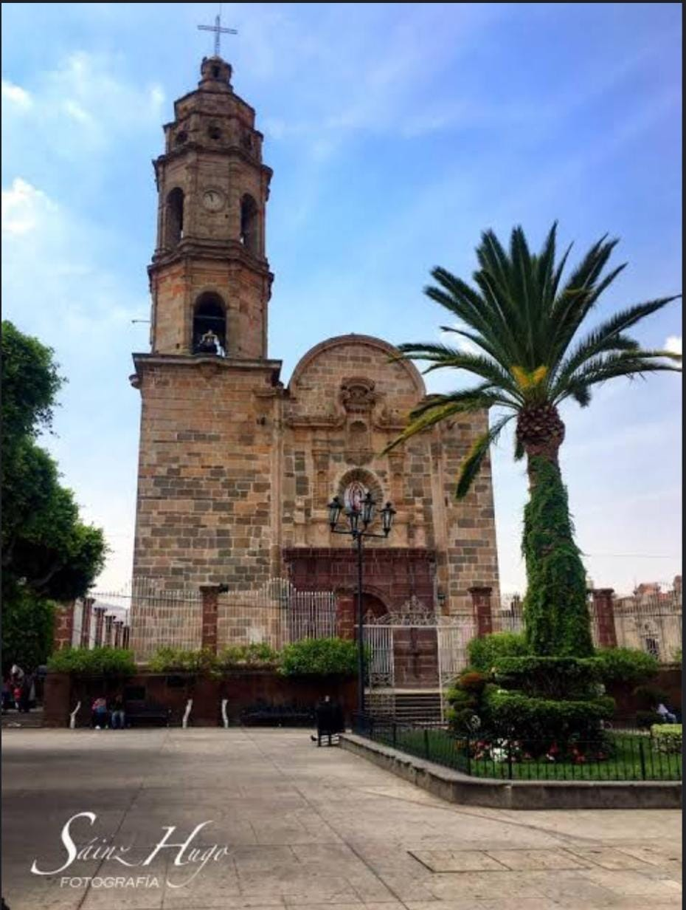
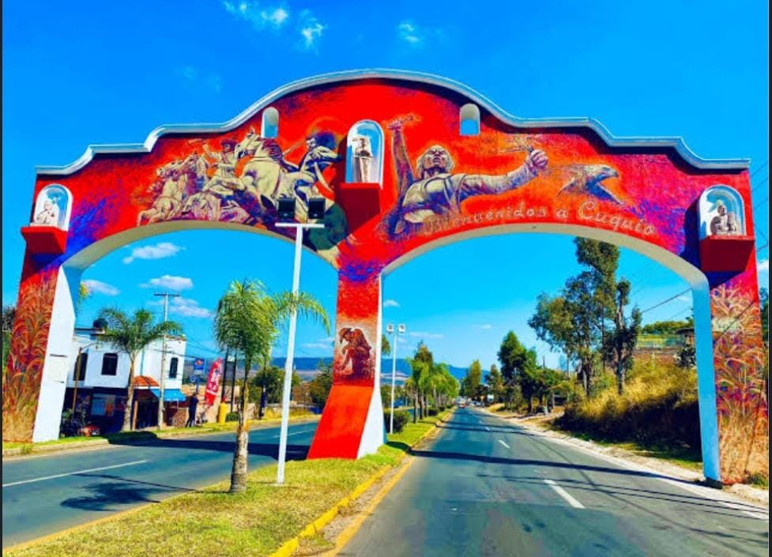

CULTURA DE CUQUIO
Historia
- Época prehispánica: Cuquio fue habitado por los aztecas y los toltecas antes de la llegada de los españoles.
- Conquista española: Cuquio fue conquistado por los españoles en el siglo XVI y se convirtió en un importante centro de producción agrícola.
Arquitectura
- glesia de la Virgen de la Asunción: es una iglesia colonial que data del siglo XVIII y es uno de los monumentos más importantes de Cuquio.
- Casa de la Cultura: es un edificio que alberga la biblioteca municipal, el museo de arte y la escuela de música.
Artes
- Pintura: se producen obras de arte en Cuquio, como pinturas y dibujos, que reflejan la cultura y la tradición del municipio.
- Música: se toca música tradicional en Cuquio, como la música de banda y la música de mariachi.

